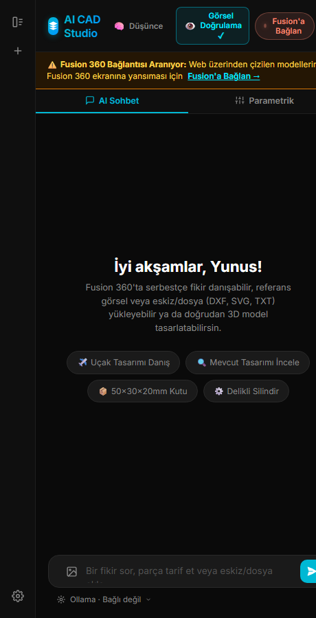
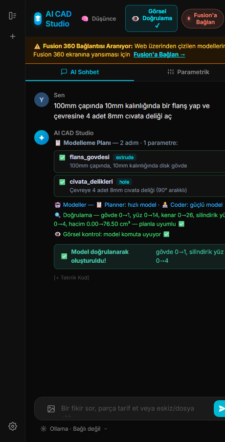
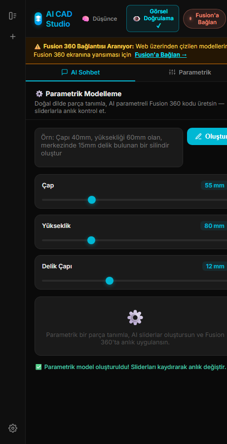
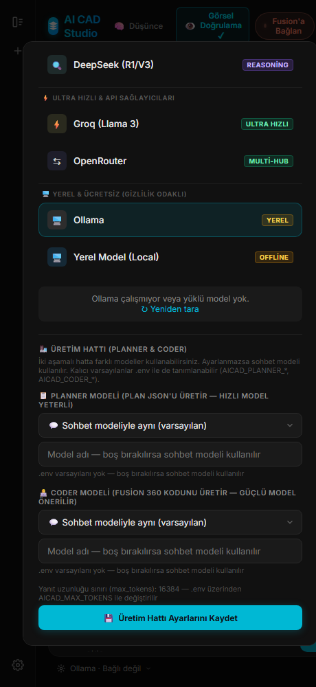
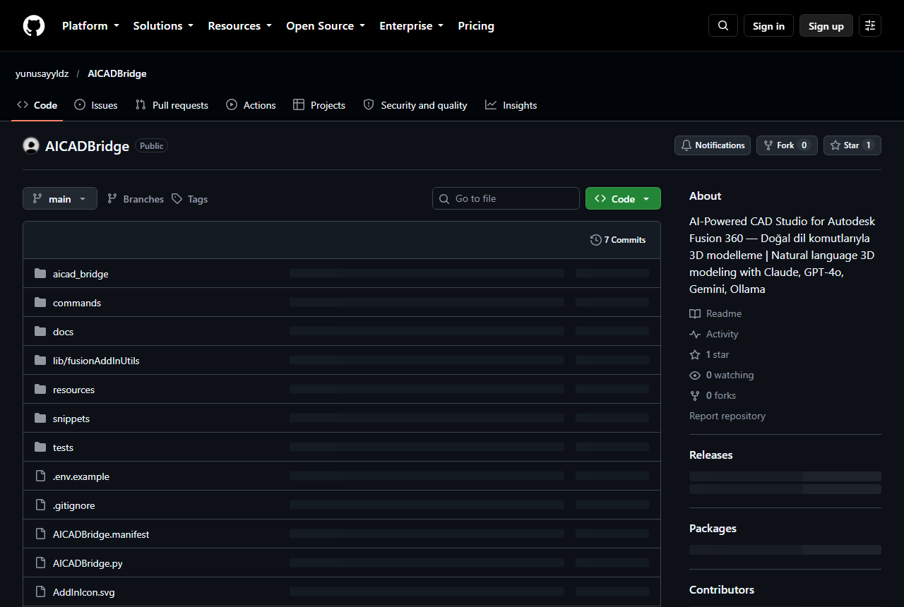

AICADBridge · Fusion 360 için yapay zekâ destekli CAD stüdyosu
Fusion 360'a cümleyle konuş.
Sen niyeti yazarsın. Model, koddan değil cümleden başlasın.

Nasıl çalışır
Bir cümle yazarsın, model gelir.
-
01
Komut
Parçayı doğal dille anlatırsın, Türkçe ya da İngilizce. Öğrenilecek sözdizimi yoktur: komut, yüksek sesle söyleyeceğin cümledir.
-
02
Plan ve kod
Planner modeli cümleyi adım adım bir plana çevirir; coder modeli her adım için gerçek Fusion 360 Python kodunu, dahili snippet kütüphanesinden beslenerek yazar. Plan da kod da her zaman görünürdür.
-
03
Fusion'da anında, doğrulanmış
Kod Fusion oturumunda saniyeler içinde çalışır. Doğrulama döngüsü sonucu planla karşılaştırır: geometrik kontroller ve viewport görüntüsü üzerinden görsel kontrol. Uymayanı onarır.

Demo
Söyle, Fusion çizsin.
HATA Kesilecek veya kesişecek hedef gövde bulunamadı
ONARIM Hata okundu, düzeltilmiş kod deneniyor (1/3)
TAMAMLANDI Model doğrulanarak oluşturuldu
Doğrulama · gövde 0→1 · silindirik yüz 0→4 · plan ile uyumlu
root = design.rootComponent
sketch = root.sketches.add(root.xYConstructionPlane)
circles = sketch.sketchCurves.sketchCircles
circles.addByCenterRadius(center, ValueInput.createByReal(0.3))
prof = sketch.profiles.item(0)
ext_input.setDistanceExtent(False, ValueInput.createByReal(1.0))
Parametrik
Ölçüyü kaydır, model güncellensin.
Üretilen modeller kullanıcı parametreleri üzerine kurulur. Paletttaki kaydırıcıyı çektiğinde kod yeniden çalışır ve gövde saniyeler içinde canlı güncellenir.
Çapı, yüksekliği, delik sayısını değiştir; cümleyi yazdığın kolaylıkta.

İki mod
Paletten ya da tarayıcıdan.
Palet
Fusion 360'ın içinde sabitlenen panel. Komutlar, plan listesi, kod ve durum akışı tek yerde, modelinin hemen yanında.
Tarayıcı
index.html'i herhangi bir tarayıcıda aç, localhost:49876 üzerindeki yerel köprü üzerinden aynı arayüzü kullan. Trafik makinenin dışına çıkmaz.
Claude · GPT · Gemini · DeepSeek · Ollama · LM Studio
Sağlayıcıyı ve API anahtarını sen getirsin; lokal modeller tamamen çevrimdışı çalışır. Planner ve coder farklı modeller olabilir; arayüzden veya .env dosyasından yapılandırılır.
Sihirli bir kutu değil, görülebilir bir üretim hattı.
Nedir, nedir değil
- Fusion 360 gerekir. Bu bir eklentidir; tek başına CAD aracı değildir.
- Kendi API anahtarın gerekir. Bulut sağlayıcılar kendi API'lerini faturalandırır; Ollama ve LM Studio ücretsiz ve lokal çalışır.
- AI kodu senin oturumunda çalışır. Üretmeden önce önemli tasarımlarını kaydet.
- Sürüm 1.0.0. Genç ve hızla gelişen bir proje.
Pas geçebilirsin
- Fusion 360 kullanmıyorsan.
- Tek tıkla kusursuz model bekliyorsan.
- API anahtarı ya da lokal model kurmak istemiyorsan.
Kurulum
Dört adım, beş dakika.
-
01
Klonla
Depoyu GitHub'dan klonla.
git clone https://github.com/Bicim/AICADBridge.git -
02
AddIns'e taşı
Klasörü Fusion'ın AddIns dizinine taşı.
-
03
Anahtarını ekle
.env.example dosyasını .env olarak kopyala, sağlayıcı anahtarını yapıştır. Ollama için anahtar gerekmez.
-
04
Çalıştır
Fusion'da: Utilities sekmesi, ADD-INS, AICADBridge'i çalıştır. Palet açılır.


SSS
Daha önce sorulanlar.
Ücretli mi?
Kod MIT lisansıyla açık kaynak. Yalnızca seçtiğin AI sağlayıcının API maliyeti sana aittir; Ollama veya LM Studio ile her şey lokal ve ücretsiz çalışır.
Hangi AI modelleri kullanılıyor?
Claude, GPT, Gemini ve DeepSeek API'leri ile; Ollama veya LM Studio üzerinden lokal modeller desteklenir. Model adını kendi sağlayıcından girersin; planner ve coder farklı modeller olabilir.
Hangi işletim sistemlerinde çalışır?
Windows ve macOS; Fusion 360'ın çalıştığı her yerde.
Verilerim nereye gidiyor?
Komutlar yalnızca yapılandırdığın sağlayıcıya gider. Ollama veya LM Studio ile hiçbir şey bilgisayarından çıkmaz. Tarayıcı modu köprüsü yalnızca localhost'ta dinler.
Tarayıcı modu nasıl çalışıyor?
Eklenti localhost:49876 üzerinde küçük bir yerel sunucu açar. index.html'i tarayıcıda açıp aynı arayüzü kullanırsın; trafik makinenin dışına çıkmaz.
Üretilen kod hata verirse ne olur?
Self-healing döngüsü hatayı okur, modele iletir ve düzeltilmiş kodu yeniden çalıştırır; üç denemeye kadar. Doğrulama turları sonucu planla karşılaştırır. Garanti değil, onarım döngüsü.